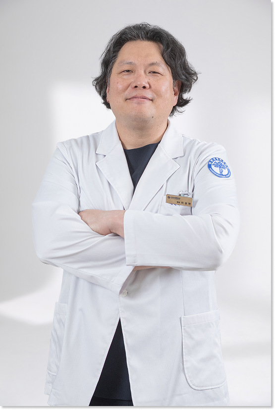
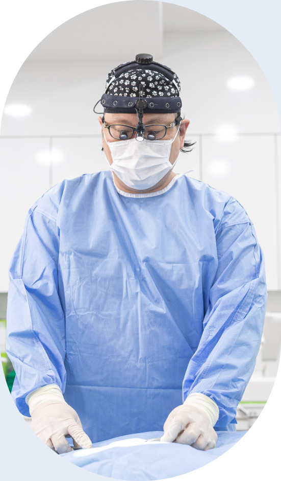

의료진 소개
건강한 움직임을 위한 맞춤 정형외과 진료
삼성G정형외과는 찾아주시는 모든 분들이 편안한 일상으로 돌아갈 수 있도록
한 분 한 분의 이야기와 개개인에 충분한 시간을 할애하고,
꼼꼼한 진단과 개인별 상태에 맞는 치료를 제공합니다.

정형외과전문의
이상현
대표원장제가 의사가 되고, 병을 치료하는 이유는 단 하나입니다.
지금 살아가시는 여러분들의 삶을 조금 더 재미있게,
하고 싶은 것을 조금 더 편하게 해드리기 위함입니다.
주요 경력
- 경희대학교 의과대학 의학박사
- 삼성서울병원 견관절 및 스포츠의학 전임의
- 건국대학교 의과대학 정형외과 임상교수
- 성균관대학교/경희대학교 의과대학 외래교수
- 인도/태국 국제 정형외과학회 해외 수술 시연
- KLPGA 투어 주치의
- 대한항공 점보스 배구팀 주치의
- 국내외 20년 이상 의료봉사 이력
- 대한 정형외과학회 추계학술대회 학술논문상 수상
풍부한 임상 경험과
비수술 노하우
주요 경력
무릎, 어깨, 허리 등 척추/관절 분야를 중심으로 자신 있게 진료합니다.
- 경피하 경막외 신경성형술(PEN)
- 고주파 수핵 감압술(IDET)
- 견관절 회전근개 미세천공술 및 골수 자극술
- 요추부/경추부 신경 차단술
- 슬관절 자가 골수 세포 주입술
- 견관절 수액 팽창술
삼성G정형외과의 시스템
대부분의 정형외과 병원은 진료실 > 엑스레이실 > 초음파실 > 처치실을 이동해야 하지만, 저희는 다릅니다.
진료실 내 초음파, 처치 키트, 전동식 견인용 베드를 모두 갖춰 하나의 진료실에서 대부분의 진료와 시술이 가능합니다. 아픈 몸으로 병원 내 불필요한 이동을 최소화했습니다.
또한 보행이 불편한 분도 편안히 이용할 수 있는 동선과 시술 환경을 제공합니다. 입원 부담 없이 양질의 치료를 받으실 수 있습니다.
